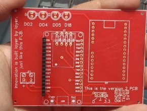
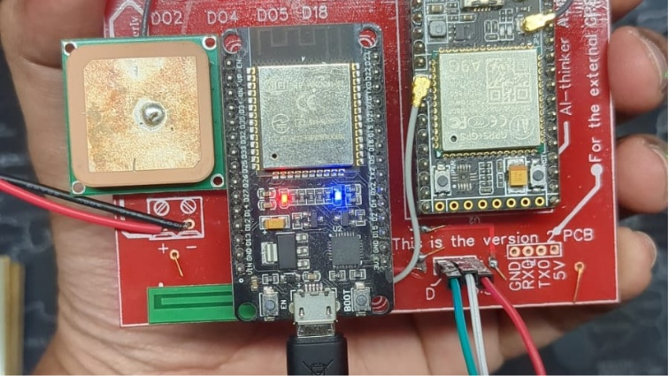
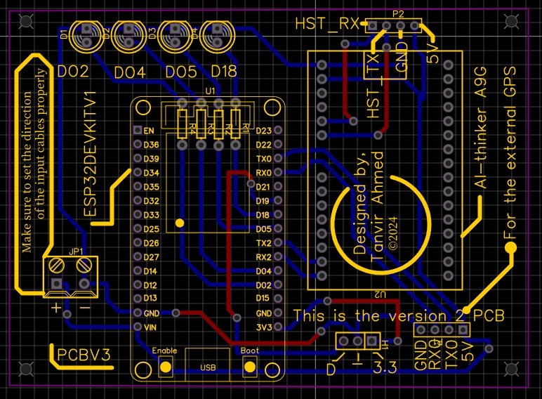

Custom PCB Design
The foundation of the tracker is a custom-designed PCB. I designed the schematic and layout to accommodate the ESP microcontroller, A9G module, and supporting components, ensuring a compact and reliable form factor.
Engineered a compact, real-time GPS tracking solution from the ground up, integrating the A9G GSM/GPS module with an ESP microcontroller to deliver live location data.
I led the hardware design, custom PCB fabrication, and firmware development for this collaborative project.


The foundation of the tracker is a custom-designed PCB. I designed the schematic and layout to accommodate the ESP microcontroller, A9G module, and supporting components, ensuring a compact and reliable form factor.
After fabrication, I meticulously soldered all the surface-mount and through-hole components onto the PCB, bringing the hardware to life and preparing it for firmware flashing and testing.

The final hardware stage involved wiring the integrated PCB to power and peripherals for testing. This phase was critical for debugging and validating the GPS positioning functionality over the cellular network.
This project was a deep dive into embedded systems and IoT connectivity, undertaken with a senior colleague. The primary goal was to create a functional, real-time GPS tracker by interfacing an ESP microcontroller with the versatile A9G GSM/GPS module.
My core responsibility was to architect the physical device. This involved designing the schematic and a custom PCB, integrating all the necessary components, and developing the firmware to handle GPS data acquisition. While we successfully achieved stable GPS positioning and hardware integration, the project concluded before the final real-time data transmission stage was fully implemented. This page showcases my contributions and the key technical milestones reached.
The work documented here reflects my direct contributions to the project. I was responsible for the full hardware development lifecycle and the initial firmware for GPS functionality. The project is a testament to practical skills in PCB design, hardware integration, and embedded programming.
Images from hardware integration, PCB layout, and testing.